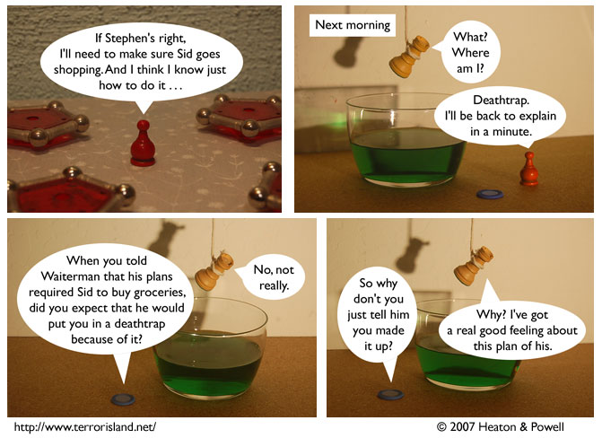

Strip #198
— Monday, September 17, 2007
Waiterman left to wait on tables.
Notes, Thoughts, &c.
Ben’s Notes
I guess Waiterman’s one of those superheroes who doesn’t mind tying his friends up in deathtraps.
Lewis’s Notes
Ben doesn’t really understand the nature of superheroism. You see, superheroism is to heroism as supervenience is to regular venience.
I don’t remember what supervenience is (I think it’s used in philosophy, possibly for the mind-body problem), so this account of superheroism will have to end there. Ask the real Lewis to explain it to you on Wednesday.
I wrote Lewis’s comments today. -Ben